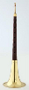

My Writings
Selamat Datang
Budaya Tionghoa merupakan budaya yang paling tua dan kompleks di dunia. Di Indonesia, warga negara keturunan Tionghoa, dapat ditemui hampir di semua kota di Indonesia. Karena orang Tionghoa sudah banyak tersebar di Indonesia, maka tidak heran kebudayaan Tionghoa banyak dikenal luas. Terlebih lagi, banyak klenteng yang dibangun di berbagai kota yang membuat semua lapisan masyarakat lama kelamaan mulai mengerti ritual dan budaya Tionghoa.
Budaya warga Tionghoa yang telah dikenal baik di Indonesia mencakup kuliner, kesenian, musik, alat musik, perayaan-perayaan, bahasa, dan pakaian.
Kuliner
Berikut ini adalah jenis-jenis makanan khas Tionghoa yang populer di Indonesia:
Kue bulan / Tiong Chiu Pia
Dasarnya berbentuk bulat, yang melambangkan kebulatan dan keutuhan. Namun seiring perkembangan zaman, bentuk-bentuk lainnya muncul menambah variasi dalam komersialisasi kue bulan. Perkataan Tiong Chiu sendiri berasal dari kata "Tiong" berarti tengah dan "Chiu" berarti musim rontok, jadi boleh dikatakan sebutan Tiong Chiu arti secara harafiahnya berarti pertengahan musim rontok. Namun demikian masyarakat lebih kenal dengan sembahyang Tiong Chiu Pia, walaupun sebenarnya penyebutan ini tidak tepat namun kenyataan dalam kebiasaan masyarakat tetap demikian.
Bakcang
Makanan dalam bungkusan daun, isinya ketan atau nasi yang ditambah daging dan isi lainnya sesuai selera. Di Tiongkok, bakcang disebut Zongzi. "Duan Wu Jie" adalah hari raya dimana umumnya orang makan bakcang. Pada hari itu dijual bermacam-macam bakcang dan semua warga, baik tua maupun muda, besar atau kecil, semua makan bakcang.
Lumpia
Memiliki ciri khas pada bahan bakunya, yaitu rebung. Selain rebung dari bambu muda, beberapa bahan yang juga utama adalah udang dan telur, termasuk tepung terigu yang digunakan sebagai pembungkus.
Siomay
Makanan yang terbuat dari terigu diisi campuran daging, udang dan lain-lain. Terdapat banyak macam isi siomay mulai dari siomay ikan tenggiri, ayam, udang, kepiting, atau campuran daging ayam dan udang. Kulit siomay mirip dengan kulit pangsit.
Bakpao
Biasanya diisi dengan daging ayam, sayur-sayuran, srikaya manis, coklat, selai kacang kedelai, kacang azuki, kacang hijau,dan sebagainya. Bakpao yang berisi daging ayam dinamakan kehpao.
Bakso
Daging yang dicincang dan dibentuk menjadi bulat,biasanya daging yang digunakan adalah daging sapi atau ikan. Bakso itu berasal dari bahasa Tionghoa yang terdiri dari 2 kata, "Bak" dan "so", dimana "Bak" artinya daging babi dan "So" itu mie + sup. Tapi kemudian di indonesia sendiri daging babi itu dirubah menjadi daging sapi tetapi tetap menggunakan kata Bak.
Mie
Dapat dibuat dari berbagai macam tepung seperti tepung terigu, tepung beras, tepung kanji, tepung kacang hijau dan lain lain. Secara umum mie dapat digolongkan menjadi dua, mie kering dan mie basah. Pada umumnya mie basah adalah mie yang belum dimasak, kandungan airnya cukup tinggi dan tidak tahan lama, jenis mie ini biasanya hanya tahan 1 hari.
Tahu Pong
Tahu yang tengahnya kosong. Tahu ini sebenarnya tahu biasa, seperti tahu-tahu lain yang kita kenal. Bedanya karena proses pembuatan yang sedikit berbeda, tingkat kepadatan akhir yang berbeda menyebabkan bolong. Sewaktu mentah bentuknya juga sama seperti tahu biasa, tetapi setelah digoreng, bagian tengahnya menyusut dan menjadi kopong / kosong.
Kue Keranjang

Kue yang terbuat dari tepung ketan dan gula, serta mempunyai tekstur yang kenyal dan lengket. Kue ini merupakan salah satu kue khas atau wajib pada saat Perayaan Tahun Baru Imlek. Kue ini dinamakan kue keranjang karena wadah cetaknya berbentuk keranjang. Kalau dulu hanya dikenal kue keranjang dibungkus daun pisang, maka kemudian, karena alasan praktis dan sulit mendapatkan daun pisang dalam jumlah banyak, digunakan plastik untuk membungkus dodol khas imlek ini.
Perayaan
Tahun Baru Imlek
Tahun Baru Imlek merupakan perayaan terpenting orang Tionghoa. Perayaan Tahun Baru Imlek dimulai di hari pertama bulan pertama (penanggalan Tionghoa) dan berakhir dengan Cap Go Meh di tanggal ke lima belas (pada saat bulan purnama). Malam tahun baru imlek dikenal sebagai Chuxi yang berarti "malam pergantian tahun". Biasanya dirayakan dengan menyulut kembang api. Di Indonesia pada tahun 1965 hingga 1998 perayaan tahun baru Imlek dilarang dirayakan di depan umum. Dengan Instruksi Presiden Nomor 14 Tahun 1967, rezim Orde Baru di bawah pemerintahan Presiden Soeharto, melarang segala hal yang berbau Tionghoa, di antaranya Imlek.
Masyarakat keturunan Tionghoa di Indonesia kembali mendapatkan kebebasan merayakan tahun baru Imlek pada tahun 2000 ketika Presiden Abdurrahman Wahid mencabut Inpres Nomor 14/1967. Kemudian Presiden Megawati Soekarnoputri menindaklanjutinya dengan mengeluarkan Keputusan Presiden Nomor 19/2002 tertanggal 9 April 2002 yang meresmikan Imlek sebagai hari libur nasional. Mulai 2003, Imlek resmi dinyatakan sebagai salah satu hari libur nasional.
Festival Lampion

Adalah festival dengan hiasan lentera yang dirayakan setiap tahunnya pada hari ke-15 bulan pertama (menurut penanggalan Tionghoa). Festival inilah yang menandai berakhirnya perayaan tahun baru Imlek. Festival ini biasanya dirayakan secara luas di Tiongkok, Taiwan, Hongkong dan negara-negara yang terdapat komunitas Tionghoa.
Cap Go Meh
Melambangkan hari ke-15 dan hari terakhir dari masa perayaan Imlek bagi komunitas Tionghoa. Pada tanggal ini juga merupakan bulan penuh pertama dalam Tahun Baru tersebut. Perayaan ini dirayakan dengan jamuan besar dan berbagai kegiatan.
Bahasa
Bahasa Tionghoa
Bahasa Tionghoa memiliki banyak varian vokal atau lisan, namun secara tertulis hanya satu. Variasi tersebut tergantung kedaerahan, sehingga bisa dikatakan sebagai bahasa daerah atau dialek.
Sekitar 1/5 penduduk dunia menggunakan salah satu bentuk bahasa Tionghoa sebagai penutur asli, maka jika dianggap satu bahasa, bahasa Tionghoa merupakan bahasa dengan jumlah penutur asli terbanyak di dunia. Bahasa Tionghoa (dituturkan dalam bentuk standarnya, Mandarin) adalah bahasa resmi Tiongkok dan Taiwan, salah satu dari empat bahasa resmi Singapura, dan salah satu dari enam bahasa resmi PBB.
Pakaian
Cheongsam
Merupakan pakaian wanita dengan corak bangsa Tionghoa. Nama "Cheongsam" berarti "pakaian panjang", diterjemahkan ke dalam Bahasa Inggris dari dialek Propinsi Guangdong (Canton) di Tiongkok.
Mudah dikenakan dan nyaman, bentuk pakaian Cheongsam cocok dengan bentuk tubuh wanita etnis Tionghoa. Leher tinggi, lengkung leher baju tertutup, dan lengan baju bisa pendek, sedang atau panjang, tergantung musim dan selera pemakainya. Memiliki kancing di sisi kanan, bagian dada longgar, selayak di pinggang, dan salah satu sisi di bagian pahanya terbelah, yang kesemuanya semakin menonjolkan kecantikan dari wanita yang mengenakannya. Cheongsam tidak terlalu susah dibuat. Tidak pula memiliki banyak perlengkapan, seperti sabuk, atau selendang. Cheongsam adalah dapat dibuat dari berbagai macam bahan dan memiliki keragaman panjang, dapat digunakan secara santai atau resmi.
Ritual
Budaya Teh Tionghoa
Minum teh telah menjadi semacam ritual di kalangan masyarakat Tionghoa. Di Tiongkok, budaya minum teh dikenal sejak 3.000 tahun sebelum Masehi (SM). Bahkan, berlanjut di Jepang (1192 – 1333) oleh pengikut Zen. Minum teh dapat menetralisasi kadar lemak dalam darah, setelah mengonsumsi makanan yang mengandung lemak.
Ceng Beng / Festival Qingming
Adalah ritual tahunan etnis Tionghoa untuk bersembahyang dan ziarah ke kuburan sesuai dengan ajaran Khonghucu. Festival Tionghoa ini jatuh pada hari ke 104 setelah titik balik matahari pada musim dingin. Bagi etnis Tionghoa, hari ini merupakan suatu hari untuk mengingat dan menghormati nenek moyang. Setiap orang berdoa di depan nenek moyang, menyapu pusara dan bersembahyang dengan menyajikan makanan, teh, arak, dupa, kertas sembahyang dan berbagai aksesoris, sebagai persembahan kepada nenek moyang.
Kua Fu mengejar Matahari
Legenda mengatakan bahwa pada jaman dahulu kala terdapat seorang raksasa sakti bernama Kua Fu yang ingin berlomba dengan matahari hingga dapat mendahului. Maka Kua Fu mengejar matahari.
Ketika hampir sejajar dengan matahari, Kua Fu merasa sangat kehausan dan kepanasan.
Dimana dia bisa mendapatkan air?
Berhenti di tengah jalan
Pada masa Negara Berperang, di negara Wei hiduplah seorang pria bernama Leyangtsi. Dia sangat sayang kepada sang istri.
Suatu hari, Leyangtsi menemukan sekeping emas pada perjalanan pulang, sehingga dia sangat senang dan berlari secepat mungkin untuk sampai ke rumah. Melihat emas yang ada, sang istri berkata dengan lembut dan bijaksana, "Seperti yang kamu ketahui, seorang lelaki sejati tidak minum dari air curian. Bagaimana kamu bisa mengambil emas tersebut dan membawanya pulang padahal itu bukan milikmu?" Hati Leyangtsi sangat tersentuh, lalu dia segera mengembalikan emas tersebut ke tempat semula.
Kesenian
Barongsai
Adalah tarian tradisional Tionghoa dengan menggunakan kostum yang menyerupai singa. Masyarakat Tionghoa percaya bahwa singa adalah lambang kebahagiaan dan kesenangan. Tarian ini dipercaya merupakan pertunjukan yang dapat membawa keberuntungan sehingga umumnya diadakan pada berbagai acara penting seperti pembukaan restoran, pendirian klenteng, dan tentu saja perayaan Tahun Baru Imlek.
Barongsai secara garis besar terdiri dari 2 jenis yakni: Singa Utara yang memiliki surai ikal dan berkaki empat. Penampilan Singa Utara kelihatan lebih natural dan mirip singa ketimbang Singa Selatan yang memiliki sisik serta jumlah kaki yang bervariasi antara dua atau empat. Kepala Singa Selatan dilengkapi dengan tanduk sehingga kadangkala mirip dengan binatang "Kilin".
Gerakan antara Singa Utara dan Singa Selatan juga berbeda. Bila Singa Selatan terkenal dengan gerakan kepalanya yang keras dan melonjak-lonjak seiring dengan tabuhan gong dan tambur, gerakan Singa Utara cenderung lebih lincah dan penuh dinamika karena memiliki empat kaki.
Satu gerakan utama dari tarian Barongsai ini adalah gerakan singa memakan amplop berisi uang yang disebut dengan istilah "Lay See". Di atas amplop tersebut biasanya ditempeli dengan sayuran (selada air) yang melambangkan hadiah bagi sang Singa. Proses memakan "Lay See", istilah ini banyak digunakan di Hongkong, ini berlangsung sekitar separuh bagian dari seluruh tarian Singa.
Pertunjukan Wayang Potehi
Potehi berasal dari kata "poo" (kain), "tay" (kantung) dan "hie" (wayang). Wayang Potehi adalah wayang boneka yang terbuat dari kain. Sang dalang akan memasukkan tangan mereka ke dalam kain tersebut dan memainkannya layaknya wayang jenis lain. Kesenian ini sudah berumur sekitar 3.000 tahun dan berasal dari daratan Tiongkok asli.
Dulunya Wayang Potehi hanya memainkan lakon-lakon yang berasal dari kisah klasik daratan Tiongkok seperti kisah legenda dinasti-dinasti yang ada di Tiongkok, terutama jika dimainkan di dalam kelenteng. Akan tetapi saat ini Wayang Potehi sudah mengambil cerita-cerita di luar kisah klasik. Pada masa masuknya pertama kali di Indonesia, wayang potehi dimainkan dalam Bahasa Hokkian. Seiring dengan perkembangan zaman, wayang ini pun kemudian juga dimainkan dalam Bahasa Indonesia.
Alat Musik
Alat musik tradisional Tionghoa dapat dimainkan secara solo, ataupun secara bersama-sama dalam sebuah orkes yang besar (seperti zaman dahulu di istana kerajaan) atau dalam grup-grup musik kecil. Jaman dahulu tidak ada konduktor di ensambel musik Tionghoa, ataupun penggunaan partitur musik pada saat pentas. Musik biasanya telah dihapalkan oleh pemusiknya, kemudian dimainkan tanpa alat bantu, sehingga kerjasama tim amat sangat dibutuhkan. Tapi zaman sekarang ini partitur ataupun konduktor dibutuhkan, apabila jumlah pemusik cukup banyak. Berikut adalah jenis-jenis alat musik tradisional Tionghoa:
Alat Musik Gesek
Erhu

Rebab Tionghoa, badannya menggunakan kulit ular sebagai membran, menggunakan 2 senar, yang digesek dengan penggesek terbuat dari ekor kuda.
Gaohu
Sejenis dengan Erhu, hanya dengan nada lebih tinggi.
Gehu
Alat musik gesek untuk nada rendah, seperti Cello.
Banhu
Rebab Tionghoa, dengan badan terbuat dari batok kelapa dengan papan kayu sebagai membrannya.
Alat Musik Petik
Liuqin
Alat musik petik kecil bentuknya seperti buah pir dengan 4 senar.
Yangqin
Alat musik ini memiliki banyak senar, cara memainkannya dengan memukul dengan stik bambu sebagai pemukulnya.
Pipa
Alat musik petik berbentuk buah pir dengan 4 atau 5 senar.
Ruan
Alat musik petik berbentuk bulat dengan 4 senar.
Sanxian
Alat musik petik dengan badan terbuat dari kulit ular dan dengan leher panjang, memiliki 3 senar.
Guzheng
Kecapi yang memiliki 16 - 26 senar.
Konghou
Harpa Tiongkok.
Alat Musik Tiup
Dizi
Suling dengan menggunakan membran getar.
Souna
Terompet Tiongkok.
Sheng
Alat musik yang menggunakan bilah logam dengan tabung-tabung bambu sebagai penghasil suara.
Xiao
Suling.
Paixiao
Pipa pen.
Alat Musik Pukul (Perkusi)
Paigu
Gendang yang terdiri dari satu set 4 atau lebih.
Dagu
Tambur besar.
Chazi
Simbal, cengceng.
Luo
Gong.
Muyu
Kecrek terbuat dari kayu.